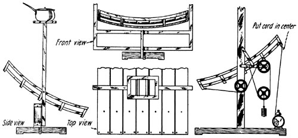

Here are some of the "very latest" breakthroughs in solar cooker design . . . at least that's the claims that have been made in recent months for "new" cookers that aren't nearly as good as the ones you see here. And these two originally appeared in the June 1923 issue of Science and Invention. That makes 'em 54 years old!
LIKE wind power, solar radiation, as available on the surface of the earth is fitful and uncertain and the flow of power is comparatively weak.
The concave mirror, whose service ableness for cooking small meals was shown many decades ago, has apparently not yet undergone the requisite simplification as to material and construction.
The writer was some years ago led along a chain of reasoning, that need not be described here, to build a cooking-mirror of tin plate, and this, despite the seeming worthlessness o f the material, has proved so useful that he cannot help thinking that a great many people the world over would be most glad to avail themselves of a similar apparatus.
To procure tin plate is easy, but shaping it into a spherical mirror requires special machinery or professional skill. It was therefore cut into seven strips each one meter (3.28 feet) long and fifteen centimeters (5.9 inches) broad and bent by hand into cylindrical mirrors of 1.5 meter (almost 5 feet) radius and then arranged into a frame made of laths so as to form roughly a spherical surface. Obviously, this mirror has also the advantage that it can easily be taken apart and transported or can have parts replaced if damaged. The construction is clearly shown in the figures and needs hardly any description.
The focus covers approximately the bottom (which always must be black) of an average sized cooking vessel. The bottom may be painted with lamp black or covered with soot.
Although the mirror is very inaccurate, the focus, none the less, possesses remarkable power of setting fire to paper, wood, etc., which must be borne in mind when the mirror is set aside after use. It is inclined face downwards and in a northerly (southerly if south of equator) direction to about 45 degrees and so is also protected against dust.
In the beginning it is almost unavoidable that splotches on the mirror occur. These are removed with a wet sponge several times rinsed in pure water. Touch the mirror surface as seldom as possible.
The frame of the grate, if made of wood, must be protected by means of bright tin plate.
What is the main value of the apparatus described ?
It enables all those interested to get practical first hand knowledge of what solar power can do and they will in most cases be agreeably surprised.
Whether the average housewife will take easily to the solar stove is another matter. Necessity can do much, however.
That solar power is independent of social disturbances is perhaps not its least advantage. All other fuels are mainly provided by the grown-up male population, but the solar stove cart be tended by the children, a good thing in critical times.
|
 Side, Top and Front View of a Solar Stove Made of Tinplate and a Wooden Frame. For Camping Purposes This Kind of Heat is Very Efficient. The Alarm Clock and Weight System Maintain the Focal Point Directly Under the Pot. |
|
|